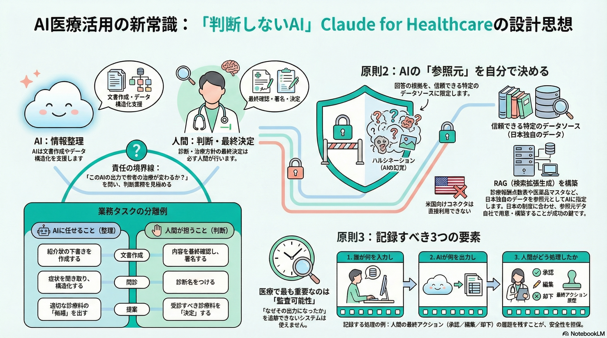

サービスの核心
Claude for Healthcareは、Anthropic社が2026年1月に発表した、医療およびライフサイエンス分野に特化したAIツールセット。単なる「医療に詳しいチャットボット」ではなく、医療業務に必要な信頼できる外部データソースやシステムにAIを「接続」し、行政・管理業務を効率化することを主眼に置いた設計です。
核心的な設計思想
🔗
接続性重視
✅
HIPAA準拠
👤
人間が判断
🔒
安全重視
AIに判断させず、人間が判断するための情報を整理させる
- 接続（Connectivity）: AIの知識だけに頼るのではなく、正確な外部データベース（参照元）に接続することで、事実に基づかない回答（ハルシネーション）を防ぎます
- 判断の留保: 診断や治療方針の決定は人間に委ね、AIは情報の構造化、要約、下書き作成などの「判断の手前」のタスクに徹するよう設計されています
- HIPAA準拠: 米国の医療情報プライバシー法（HIPAA）に対応した環境で提供され、セキュリティとコンプライアンスを確保しています
主要機能とコンポーネント
コネクター（Connectors）
医療事務・管理系
CMS Coverage Database（米国の保険適用ルール）、ICD-10（国際疾病分類コード）、NPI Registry（医療者資格情報）。保険の事前承認や請求業務の効率化に使用
医学的エビデンス系
PubMed（3,500万件以上の文献）、bioRxiv/medRxiv（プレプリント論文）。最新の医学研究にアクセス
ライフサイエンス系
ClinicalTrials.gov（臨床試験情報）、Medidata（治験管理）、ChEMBL（創薬データ）など。研究開発を加速
患者データ系（ベータ版）
Apple Health、Android Health Connect、HealthExなどと連携し、個人の健康記録や検査結果を参照・要約
エージェントスキル（Agent Skills）
特定の業務を実行するためのテンプレート機能
- FHIR開発スキル: 医療情報交換の標準規格であるFHIRリソースの作成や検証を支援します
- 事前承認（Prior Authorization）レビュースキル: 保険適用要件と患者記録を照合し、承認・否認の判断材料を整理します
- 臨床試験プロトコル生成: 規制要件（FDA等）を考慮した試験実施計画書のドラフトを作成します
主なユースケース
事前承認と請求業務の迅速化
保険適用ルールの確認や、否認された請求への不服申し立て（アピール）資料の作成を支援し、事務負担を軽減します
患者ケアの調整
患者ポータルからのメッセージをトリアージ（優先順位付け）し、緊急度に応じた対応案を提示します
臨床試験・研究の加速
過去の試験データの分析や、プロトコルのドラフト作成、規制当局への提出書類作成を支援します
患者の受診準備
自身の検査結果を平易な言葉で解説したり、医師に聞くべき質問リストを作成したりします（コンシューマー向け）
日本市場での活用と注意点
提供されているコネクターの多く（CMS、NPIなど）は米国制度向けですが、設計思想とアーキテクチャは日本の医療DXにも応用可能です。
日本市場への適用戦略
「参照元」の置き換えによる日本対応
米国のデータソースを日本の制度・基準に置き換えることで、同様の価値を創出できます:
- CMS Coverage Database → 診療報酬点数表
- ICD-10 → 標準病名マスタ
- NPI Registry → 医療機関・医師データベース
これらをRAG（Retrieval-Augmented Generation）システムとして構築することで、日本版Claude for Healthcareを実現できます。
すぐに使える機能
以下の機能は、日本でもそのまま活用可能です:
- PubMed文献検索: 日本語の文献も多数含まれており、最新の医学研究にアクセス可能
- FHIR開発スキル: 国際標準であるFHIRは日本でも採用が進んでおり、相互運用性の向上に貢献
- 臨床試験関連機能: FDA基準だけでなく、PMDAの規制要件にも対応させることが可能
開発者向け統合
GitHub上で関連ツールやMCP（Model Context Protocol）サーバーが公開されており、エンジニアはこれらを利用して自社システムとClaudeを統合できます:
- オープンソースのMCPサーバー実装を活用
- 既存の電子カルテシステムとの連携
- 日本固有の医療データベースへの接続
- カスタマイズされたエージェントスキルの開発
実務的パートナーとしての位置づけ
「魔法の杖」ではなく「実務的なパートナー」
Claude for Healthcareは、以下の点で他の医療AIと一線を画します:
- 接続優先: AIの知識だけでなく、信頼できる外部データソースと接続することを重視
- 判断は人間に: AIは情報整理に徹し、最終的な医療判断は人間が行う設計
- 実務フロー統合: 既存の医療システムやワークフローに自然に統合できる
- コンプライアンス重視: HIPAA準拠など、医療業界の規制に対応
総括: Claude for Healthcareは、AIを「魔法の杖」としてではなく、既存の医療システムやデータと堅実に連携させる「実務的なパートナー」として位置づけた製品です。日本の医療DXにおいても、この設計思想とアーキテクチャを参考に、独自の医療AIエコシステムを構築できる可能性を秘めています。